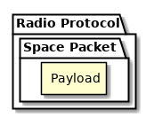
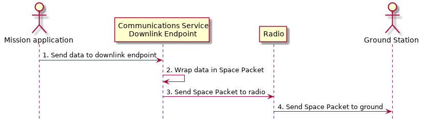

Communications Service Framework¶
The hardware used to establish communication between a satellite and the ground varies wildly from mission to mission. As a result, KubOS provides a communications service framework which can be used by developers when creating their specific radio’s hardware service. This framework is used to simplify the process of reading messages from the ground, forwarding them to the appropriate internal destination, and then sending properly formatted messages back to the ground.
Note
The communications service framework is currently only available in Rust. As a result, services wishing to utilize the framework should also be written in Rust.
Architecture¶
![@startuml
skinparam linetype polyline
skinparam linetype ortho
left to right direction
rectangle "Telemetry Service" as Telemetry
rectangle "Mission Application" as App
rectangle "Radio" as Radio
package "Communications Service" {
rectangle "Read Thread" as Read
rectangle "Message Handler" as Message
rectangle "Downlink Endpoint" as Downlink
}
Radio -right-> Read
Downlink -up-> Radio
Message -left-> Radio
Telemetry .left.> Message
Message .right.> Telemetry
Telemetry .> App
App .> Telemetry
App .> Downlink
@enduml](../../_images/plantuml-b91ce868eca1a6acb8bd2923407629362e19462e.png)
![@startuml
hide footbox
actor "Ground Control" as ground_control
participant "Radio" as radio
participant "Communications Services" as comms_service
participant "Flight Software" as software
ground_control -> radio: 1. Send command to satellite
radio -> comms_service: 2. Read data packets from radio
comms_service -> software: 3. Send packet payload to appropriate service
software -> comms_service: 4. Send response back
comms_service -> radio: 5. Send data packet to radio with response
radio -> ground_control: 6. Send response to ground control
@enduml](../../_images/plantuml-6b9b77de3b846c14b2b98e769b07cdc87f670eb4.png)
Data Packets¶
All packets sent to/from the communication device, over the wire (or air), will be encapsulated in several layers.

The first layer will be whatever communication protocol the device requires. For example, AX.25 is frequently used as the header protocol for radio communication.
Inside of this will be a Space Packet containing one of the following payloads:
- GraphQL query or mutation
- JSON GraphQL responses
- File/shell service commands or data
- Any other application data or payload which can be passed over UDP
Ground Communication¶
The communications service maintains a constant read thread which listens for messages from the ground via the communications device. Once a message is received, the message’s Space Packet header is examined to determine the payload type. Currently the communications service framework supports two payload types: GrahpQL and UDP. The payload type determines how the message is passed on to the rest of the system.
GraphQL Payloads¶
When a GraphQL message is received, a message handler thread is spawned. This message handler examines the port embedded in the message’s Space Packet header to determine the internal message destination and then makes an HTTP POST to the appropriate service. The handler then waits for a response (within a specified timeout duration), wraps the response in a Space Packet, and then sends the packet to the communications device for transmission. Once this transaction has completed, the message handler thread exits.
![@startuml
hide footbox
actor Radio
box "Communications Service" #LightBlue
participant "Read Thread" as read
Radio -> read : 1. Read data packets from radio
read -> read : 2. Deframe data packets
read -> read : 3. Reassemble data packet
create "Message Handler" as handler
read -> handler : 4. Spawn new message handler
activate handler
end box
participant "Kubos Service" as service
handler -> service : 5. Posts GraphQL query/mutation to service
service -> handler : 6. Return result of query/mutation
handler -> handler : 7. Wrap result in Space Packet
handler -> Radio : 8. Send response packet to radio
destroy handler
@enduml](../../_images/plantuml-c15ac494d3908dc66c8241d1a7ad1390c0951466.png)
UDP Payloads¶
When a UDP message is received, a message handler thread is spawned. This message handler examines the port embedded in the message’s Space Packet header to determine the internal message destination and then sends a UDP packet containing the message to the appropriate service. The message handler thread exits immediately after sending out the UDP packet. UDP payloads sent from the ground to flight are intended to act as a one-way passthrough. Any responses must be sent through the appropriate downlink endpoint.

Downlink Endpoints¶
There are some instances where the satellite might need to send a message to the ground without first receiving a request for data. An example would be when sending a periodic health-and-status beacon.
In this case, the communications service may be defined with a downlink endpoint thread (or multiple threads if more than one method may be used for downlink communication).
Each endpoint is assigned its own UDP port and maintains a constant read thread which listens for messages from within the satellite which should be transmitted.
When the endpoint’s read thread receives a message, it wraps it up in a Space Packet and then sends it to the communications device, via the user-defined write function.

Configuration¶
Most missions tend to have a single communications device which communicates via a single uplink and single downlink method. However, some missions have more complex communications systems; for example, having a slower, but more reliable downlink method for transmitting a small health-and-status beacon and then a faster, but more error-prone method for transmitting more detailed telemetry information.
The communications service framework provides mechanisms to handle these more complex configurations.
The service’s config.toml file should contain the following parameters:
max_num_handlers- (Default: 50) The maximum number of concurrent message handlers alloweddownlink_ports- (Optional) List of ports used by downlink endpoints that send messages to the ground. Each port in the list will be used by one downlink endpointtimeout- (Default: 1500) Length of time a message handler should wait for a reply, in millisecondsip- (Required) IP address of the communications service
The service which implements the framework should create a CommsControlBlock, which provides the final configuration to the main communication logic. It contains the following members:
read_conn- This is the connection structure which is used for reading from the communications device, for example a UART port or UDP socketwrite_conn- This is the connection structure which is used for reading from the communications device, for example a UART port or UDP socketread- (Optional) A pointer to the function which should be used to read a message from the communications devicewrite- A list of function pointers for all available ways that messages may be written to the communications devicemax_num_handlers- Should be copied from the corresponding config.toml valuedownlink_ports- Should be copied from the corresponding config.toml value orNonetimeout- Should be copied from the corresponding config.toml valueip- Should be copied from the corresponding config.toml value
Warning
If downlink endpoints are being used, the number of function pointers in the write list
must be equal to the number of ports in the downlink_ports list.
Implementation¶
Because communication methods may vary from mission to mission, it is up to the user to create the final hardware service/s which will be used for communication with the ground.
The service which implements the communications service framework should utilize only a single communication device. If multiple devices are present in the system, a service should be created for each of them.
The service should contain the following components:
- A function capable of reading messages from the communications device (note: this may be omitted in the case where the communications device will only be used for transmitting data)
- At least one function capable of writing messages to the communications device
- Initialized connection structure/s which will be used by the previous read and/or write functions
- A CommsControlBlock structure containing all of the communications configuration information
- A CommsTelemetry structure which will be used to gather communication statistics
It is recommended that the service also follow the guidelines for normal hardware services.
Some support for communicating with specific hardware devices has been provided in various hardware APIs.
For more information about how to implement a communications service, please refer to the following resources: